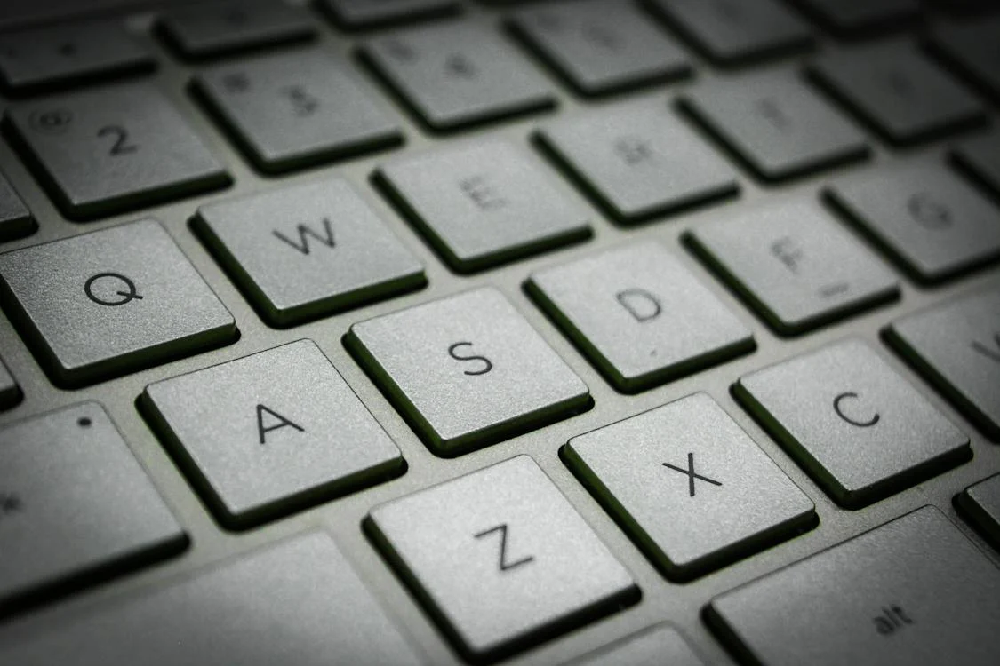
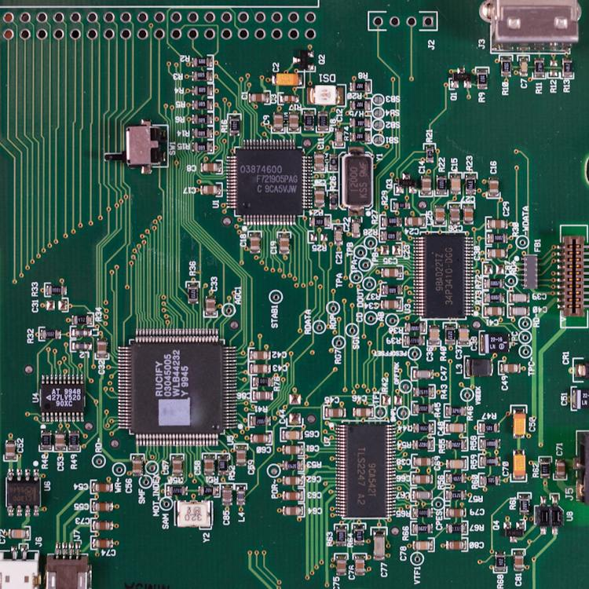

Computers are widely available and complete many useful tasks. But what are they? A computer is an electronic device. Some examples you might have or see are laptops, phones or PCs. This device would take an input from you or anything else, then output a result. It stores and manipulates data to process it into a meaningful result. They run using electricity to follow instructions.

Photo by Nao Triponez from Pexels: https://www.pexels.com/photo/shallow-focus-photography-of-macbook-792199/
Computers allow you to do many things. It allows you to connect with others online through messaging and video. It allows you to write and print a document. You can research information through web browsers. Many things in school or work requires it. For example a photography class would need to take photos and view them on a device to edit. Another example is designing a poster for a class which can be done on applications like Canva. All together it makes a very useful system for many different things.

Photo by Ketut Subiyanto from Pexels: https://www.pexels.com/photo/faceless-person-using-touchpad-on-laptop-4126724/
Computers follow instructions but they don't know how to do things themselves. A computer system takes in input from you, the user, and outputs it. Input devices allow you to communicate with the computer to get it to do what you want. It uses data sent from devices. Some examples include, a mouse which allows you to interact with on screen elements, and a keyboard which allows you to input language characters and input commands. Output devices show you the result of the calculations and instructions, allowing the computer to communicate the results to you. Some output devices are, the monitor which shows whats happening on the computer in a way you can understand. Another example is a speaker which outputs sound that you can hear like music. So without the input or output, a computer is completely useless to you.
Photo by Khizar Hayat from Pexels: https://www.pexels.com/photo/gray-keypad-1114703/
A computer system can complete all these wonderful tasks. But how do they actually do it? It can do this because a computer system is made up of software and hardware. Hardware is what you can actually touch while the software are the instructions to perform tasks. The hardware is a collection of many different devices for different purposes. It performs the calculations and everything. The software is the instructions run on the hardware. A system software unifies all the hardware and runs a base level of functionality. Application software can run specific tasks on top of the system software. For example a game or web browser. That's how the hardware and software can run many amazing programs that is easy to use.

Photo by Lukas from Pexels: https://www.pexels.com/photo/person-encoding-in-laptop-574071/
The hardware is necessary to a computer system. But what does each piece of hardware do? What controls everything and stores data? These components all have various uses and purposes. Firstly the CPU is like a brain. It controls the functions of the computer and processes data but it doesn't store it. RAM is temporary memory that stores things like the webpages you’re currently on. ROM is permanent storage for storing things like applications, photos, and keep memory until deleted.
Photo by Miguel Á. Padriñán from Pexels: https://www.pexels.com/photo/green-circuit-board-343457/